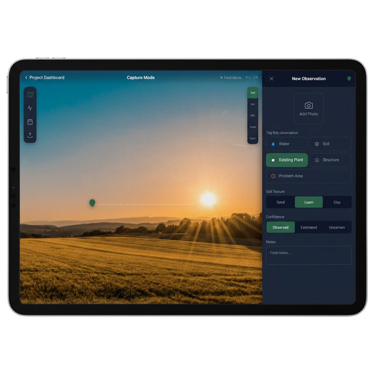
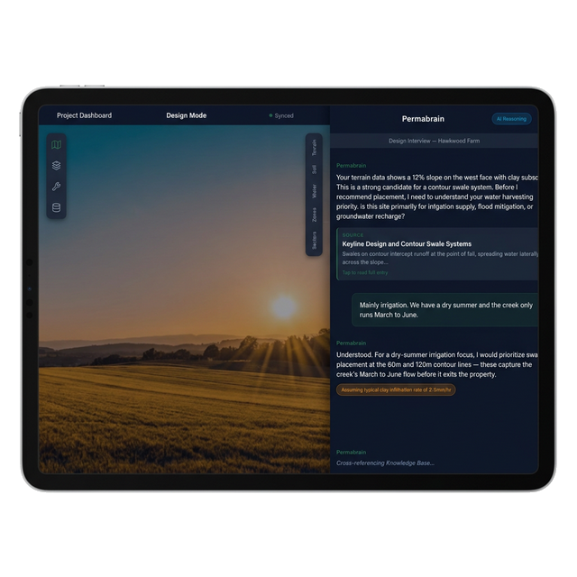
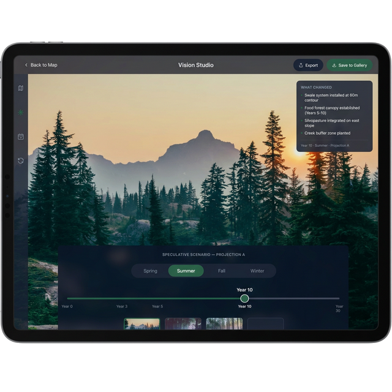
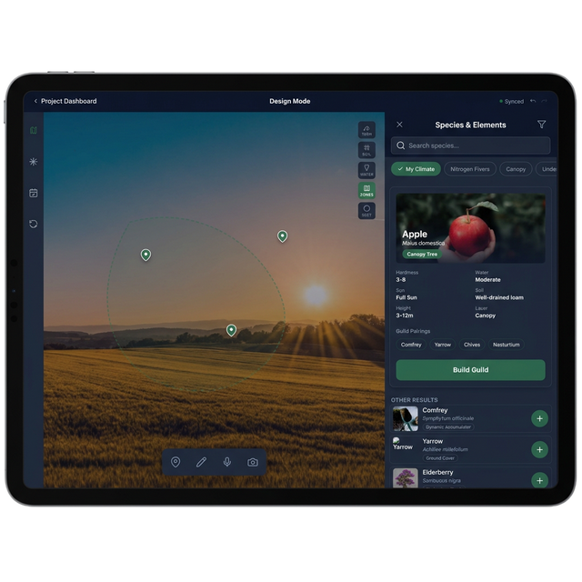

<!DOCTYPE html>
<html lang="en">

<head>
    <meta charset="UTF-8">
    <meta name="viewport" content="width=device-width, initial-scale=1.0">
    <title>PermiePad | Cinematic Portfolio</title>

    <!-- Fonts -->
    <link rel="preconnect" href="https://fonts.googleapis.com">
    <link rel="preconnect" href="https://fonts.gstatic.com" crossorigin>
    <link
        href="https://fonts.googleapis.com/css2?family=Inter:wght@300;400;500;600&family=JetBrains+Mono:wght@400;500;700&family=Space+Grotesk:wght@400;500;600;700&display=swap"
        rel="stylesheet">

    <!-- Tailwind CSS via CDN -->
    <script src="https://cdn.tailwindcss.com"></script>
    <script>
        tailwind.config = {
            theme: {
                extend: {
                    fontFamily: {
                        sans: ['Inter', 'sans-serif'],
                        display: ['Space Grotesk', 'sans-serif'],
                        mono: ['JetBrains Mono', 'monospace'],
                    },
                    colors: {
                        canopy: '#059669',
                        dark: '#020303'
                    }
                }
            }
        }
    </script>

    <style>
        body {
            background-color: #020303;
            color: #ffffff;
            overflow-x: hidden;
            -webkit-font-smoothing: antialiased;
            margin: 0;
            padding: 0;
        }

        ::selection {
            background: #059669;
            color: white;
        }

        /* Custom scrollbar */
        ::-webkit-scrollbar {
            width: 6px;
        }

        ::-webkit-scrollbar-track {
            background: #020303;
        }

        ::-webkit-scrollbar-thumb {
            background: #1f2937;
        }

        .video-overlay {
            background: radial-gradient(circle at center, rgba(0, 0, 0, 0.4) 0%, #020303 100%);
        }

        .glass-panel {
            background: rgba(255, 255, 255, 0.05);
            backdrop-filter: blur(24px);
            -webkit-backdrop-filter: blur(24px);
            border: 1px solid rgba(255, 255, 255, 0.1);
        }

        .glass-pill {
            background: rgba(255, 255, 255, 0.1);
            backdrop-filter: blur(12px);
            border: 1px solid rgba(255, 255, 255, 0.15);
        }

        @media (max-width: 768px) {
            .video-overlay {
                background: linear-gradient(to bottom, transparent 0%, #020303 70%);
            }
        }
    </style>

    <!-- React, ReactDOM, Babel via CDN -->
    <script crossorigin src="https://unpkg.com/react@18/umd/react.production.min.js"></script>
    <script crossorigin src="https://unpkg.com/react-dom@18/umd/react-dom.production.min.js"></script>
    <script src="https://unpkg.com/@babel/standalone/babel.min.js"></script>

    <!-- Framer Motion via CDN -->
    <script src="https://unpkg.com/framer-motion@10.16.4/dist/framer-motion.js"></script>

    <!-- Lucide Icons -->
    <script src="https://unpkg.com/lucide@latest"></script>
</head>

<body>
    <div id="root"></div>

    <script type="text/babel">
        // Wrapper component to render Lucide icons in React without the npm package
        const Icon = ({ name, className }) => {
            const ref = React.useRef(null);
            React.useEffect(() => {
                if (window.lucide && ref.current) {
                    ref.current.innerHTML = `<i data-lucide="${name}" class="${className || ''}"></i>`;
                    window.lucide.createIcons({ root: ref.current });
                }
            }, [name, className]);
            return <span ref={ref} className="inline-flex items-center justify-center"></span>;
        };

        const { useState, useEffect } = React;
        const { motion, AnimatePresence } = window.Motion;

        const FrameAnimation = () => {
            const canvasRef = React.useRef(null);
            const { scrollYProgress } = window.Motion.useScroll();

            const frameCount = 112;
            const [frameIndex, setFrameIndex] = React.useState(0);
            const imagesRef = React.useRef([]);

            React.useEffect(() => {
                const loadImages = async () => {
                    const loadedImages = [];
                    for (let i = 1; i <= frameCount; i++) {
                        const img = new Image();
                        const paddedIndex = i.toString().padStart(3, '0');
                        img.src = `./FInal.pics.video/sequence/ezgif-frame-${paddedIndex}.jpg`;
                        loadedImages.push(img);
                    }
                    imagesRef.current = loadedImages;

                    if (loadedImages[0]) {
                        loadedImages[0].onload = () => {
                            drawFrame(0);
                        }
                    }
                };
                loadImages();
            }, []);

            const drawFrame = (index) => {
                if (!canvasRef.current || !imagesRef.current[index]) return;
                const ctx = canvasRef.current.getContext('2d');
                const img = imagesRef.current[index];

                if (img.complete) {
                    const canvas = canvasRef.current;
                    const bgScale = Math.max(
                        canvas.width / img.naturalWidth,
                        canvas.height / img.naturalHeight
                    );

                    const drawWidth = img.naturalWidth * bgScale;
                    const drawHeight = img.naturalHeight * bgScale;

                    const offsetX = (canvas.width - drawWidth) / 2;
                    const offsetY = (canvas.height - drawHeight) / 2;

                    ctx.clearRect(0, 0, canvas.width, canvas.height);
                    ctx.drawImage(img, offsetX, offsetY, drawWidth, drawHeight);
                }
            };

            React.useEffect(() => {
                return scrollYProgress.onChange((latest) => {
                    // Span the sequence over the total page scroll (map 0-1 across the entire scrollable area)
                    const currentFrame = Math.min(
                        Math.floor(latest * frameCount),
                        frameCount - 1
                    );
                    setFrameIndex(currentFrame);
                    drawFrame(currentFrame);
                });
            }, [scrollYProgress]);

            React.useEffect(() => {
                const resize = () => {
                    if (canvasRef.current) {
                        const pixelRatio = window.devicePixelRatio || 1;
                        canvasRef.current.width = window.innerWidth * pixelRatio;
                        canvasRef.current.height = window.innerHeight * pixelRatio;
                        drawFrame(frameIndex);
                    }
                }
                window.addEventListener('resize', resize);
                resize();
                return () => window.removeEventListener('resize', resize);
            }, [frameIndex]);

            return (
                <div className="fixed inset-0 z-0 h-full w-full bg-dark pointer-events-none">
                    <canvas ref={canvasRef} className="absolute inset-0 w-full h-full opacity-60" style={{ display: "block" }} />
                    <div className="absolute inset-0 video-overlay"></div>
                </div>
            );
        };

        const SectionHero = () => {
            return (
                <section className="relative min-h-[100vh] w-full flex flex-col justify-start overflow-visible pt-12">
                    <div className="h-screen w-full flex flex-col justify-center">

                        {/* Top Nav */}
                        <header className="fixed top-0 left-0 w-full p-6 md:p-12 flex justify-between items-start z-30">
                            <div className="font-display font-bold tracking-widest text-lg drop-shadow-md">PERMIEPAD</div>
                        </header>

                        {/* Main Content */}
                        <main className="relative z-10 grid grid-cols-1 md:grid-cols-12 gap-8 px-6 md:px-12 items-center h-full pt-20">
                            <motion.div
                                initial={{ y: 30, opacity: 0 }}
                                animate={{ y: 0, opacity: 1 }}
                                transition={{ delay: 0.2, duration: 1 }}
                                className="col-span-1 md:col-span-8"
                            >
                                <h1 className="font-display text-[10vw] md:text-[7vw] uppercase font-bold leading-[0.85] tracking-tighter mb-6">
                                    See the Land. <br />
                                    <span className="text-transparent bg-clip-text bg-gradient-to-r from-white to-canopy">Design the Future.</span>
                                </h1>
                                <p className="max-w-[500px] text-gray-300 font-light leading-relaxed text-base md:text-lg">
                                    AI-Powered Permaculture Design Studio for iPad.
                                </p>
                            </motion.div>

                            <motion.div
                                initial={{ scale: 0.9, opacity: 0 }}
                                animate={{ scale: 1, opacity: 1 }}
                                transition={{ delay: 0.6, duration: 1 }}
                                className="col-span-1 md:col-span-4 hidden md:flex flex-col gap-6 font-mono text-xs uppercase tracking-widest mt-12 md:mt-0"
                            >
                                <div className="border-b border-white/10 pb-4 flex justify-between">
                                    <span className="text-gray-500">Status</span>
                                    <span>Offline-First</span>
                                </div>
                                <div className="border-b border-white/10 pb-4 flex justify-between">
                                    <span className="text-gray-500">Brain</span>
                                    <span>On-Device AI</span>
                                </div>
                                <div className="border-b border-white/10 pb-4 flex justify-between">
                                    <span className="text-gray-500">Scale</span>
                                    <span>Any Land, Anywhere</span>
                                </div>
                                <div className="border-b border-white/10 pb-4 flex justify-between">
                                    <span className="text-gray-500">Mission</span>
                                    <span>Heal the Earth</span>
                                </div>
                            </motion.div>
                        </main>

                        {/* Scroll Indicator */}
                        <motion.div
                            initial={{ opacity: 0 }}
                            animate={{ opacity: 1 }}
                            transition={{ delay: 1.5, duration: 1 }}
                            className="absolute bottom-8 left-1/2 -translate-x-1/2 z-20 flex flex-col items-center gap-2"
                        >
                            <span className="font-mono text-[10px] text-gray-400 uppercase tracking-widest">Scroll</span>
                            <div className="w-[1px] h-12 bg-white/20 overflow-hidden relative">
                                <motion.div
                                    animate={{ y: [0, 48] }}
                                    transition={{ repeat: Infinity, duration: 1.5, ease: "linear" }}
                                    className="w-full h-1/2 bg-canopy absolute top-0"
                                ></motion.div>
                            </div>
                        </motion.div>
                    </div>
                </section>
            );
        };

        const SectionOne = () => {
            return (
                <section className="relative min-h-screen w-full flex items-center px-6 md:px-12 py-24 overflow-hidden bg-transparent">
                    <div className="max-w-7xl mx-auto w-full grid grid-cols-1 md:grid-cols-2 gap-16 relative z-10 items-center">
                        <motion.div
                            initial={{ opacity: 0, x: -50 }}
                            whileInView={{ opacity: 1, x: 0 }}
                            viewport={{ once: true, margin: "-20%" }}
                            transition={{ duration: 0.8 }}
                            className="order-2 md:order-1 relative aspect-[4/3] flex items-center justify-center p-4"
                        >
                            
                        </motion.div>

                        <motion.div
                            initial={{ opacity: 0, y: 30 }}
                            whileInView={{ opacity: 1, y: 0 }}
                            viewport={{ once: true, margin: "-20%" }}
                            transition={{ duration: 0.8 }}
                            className="order-1 md:order-2"
                        >
                            <div className="inline-block px-3 py-1 mb-6 rounded-full border border-canopy/30 bg-canopy/10 text-canopy font-mono text-xs uppercase tracking-widest">
                                SYS-01 // CAPTURE
                            </div>
                            <h2 className="font-display text-4xl md:text-6xl font-bold uppercase tracking-tight mb-6 leading-none">
                                Your Land.<br /><span className="text-gray-500">No Signal Required.</span>
                            </h2>
                            <p className="text-gray-300 font-light text-lg leading-relaxed max-w-lg">
                                PermiePad works where you work — in the field, offline, from the first observation. GPS-tagged captures, voice notes, and soil data stay safe on your iPad and sync seamlessly when you're back online.
                            </p>
                        </motion.div>
                    </div>
                </section>
            );
        };

        const SectionTwo = () => {
            return (
                <section className="relative min-h-screen w-full flex items-center px-6 md:px-12 py-24 overflow-hidden bg-transparent">
                    <div className="max-w-7xl mx-auto w-full relative z-10 flex flex-col md:flex-row gap-16 items-center">
                        <motion.div
                            initial={{ opacity: 0, y: 30 }}
                            whileInView={{ opacity: 1, y: 0 }}
                            viewport={{ once: true, margin: "-20%" }}
                            transition={{ duration: 0.8 }}
                            className="w-full md:w-1/2"
                        >
                            <div className="inline-block px-3 py-1 mb-6 rounded-full border border-canopy/30 bg-canopy/10 text-canopy font-mono text-xs uppercase tracking-widest">
                                SYS-02 // ON-DEVICE INTELLIGENCE
                            </div>
                            <h2 className="font-display text-5xl md:text-7xl text-white uppercase font-bold leading-[0.8] tracking-tighter mb-8">
                                Permabrain
                            </h2>
                            <p className="text-gray-300 font-light text-xl leading-relaxed max-w-lg mb-8">
                                An on-device ecological intelligence that speaks like a mentor who's done this a thousand times. Ask it anything about your site — soils, water, species, guilds — and get grounded, actionable guidance drawn from the deepest roots of permaculture knowledge.
                            </p>

                            <div className="grid grid-cols-2 gap-8 pt-8 border-t border-white/10">
                                <div>
                                    <h3 className="font-mono text-xs text-canopy uppercase tracking-widest mb-2">OFFLINE INFERENCE</h3>
                                    <p className="text-xs text-gray-400">Vector embeddings load directly into an ObjectBox database. No cellular signal required.</p>
                                </div>
                                <div>
                                    <h3 className="font-mono text-xs text-canopy uppercase tracking-widest mb-2">ECOLOGICAL GUILDS</h3>
                                    <p className="text-xs text-gray-400">Contextual querying formulates symbiotic plant combinations based on local site conditions.</p>
                                </div>
                            </div>
                        </motion.div>

                        <motion.div
                            initial={{ opacity: 0, x: 50 }}
                            whileInView={{ opacity: 1, x: 0 }}
                            viewport={{ once: true, margin: "-20%" }}
                            transition={{ duration: 0.8 }}
                            className="w-full md:w-1/2 flex items-center justify-center"
                        >
                            
                        </motion.div>
                    </div>
                </section>
            );
        };

        const SectionThree = () => {
            return (
                <section className="relative min-h-[80vh] w-full flex items-center px-6 md:px-12 py-24 overflow-hidden text-center bg-transparent">
                    <div className="max-w-4xl mx-auto w-full relative z-10 flex flex-col items-center">
                        <motion.div
                            initial={{ opacity: 0, scale: 0.9 }}
                            whileInView={{ opacity: 1, scale: 1 }}
                            viewport={{ once: true, margin: "-20%" }}
                            transition={{ duration: 0.8 }}
                        >
                            <div className="inline-block px-3 py-1 mb-8 rounded-full border border-canopy/30 bg-canopy/10 text-canopy font-mono text-xs uppercase tracking-widest">
                                SYS-03 // THE FUTURE OF THE LAND
                            </div>
                            <h2 className="font-display text-5xl md:text-8xl text-white uppercase font-bold leading-[0.9] tracking-tighter mb-8">
                                See What Your<br /><span className="text-gray-500">Land Could Become</span>
                            </h2>
                            <p className="text-gray-300 font-light text-xl md:text-2xl leading-relaxed max-w-2xl mx-auto">
                                Watch degraded ground transform into a thriving food forest before you plant a single seed. PermiePad generates photorealistic visions of your landscape's future — from Year 0 to Year 30 — turning hope into a plan.
                            </p>
                        </motion.div>
                    </div>
                </section>
            );
        };

        const SectionGallery = () => {
            return (
                <section className="relative w-full px-6 md:px-12 py-24 pb-48 border-t border-white/5 bg-transparent">
                    <div className="max-w-7xl mx-auto w-full relative z-10">
                        <motion.div
                            initial={{ opacity: 0, y: 20 }}
                            whileInView={{ opacity: 1, y: 0 }}
                            viewport={{ once: true, margin: "-10%" }}
                            className="mb-16 md:mb-24 flex flex-col md:flex-row md:items-end justify-between gap-8"
                        >
                            <div>
                                <h2 className="font-display text-3xl md:text-5xl font-bold uppercase tracking-tight mb-4 text-white">The Complete Workflow</h2>
                                <p className="text-gray-400 font-light max-w-xl text-lg">From first site walk to full ecological design — on one device.</p>
                            </div>
                        </motion.div>

                        <div className="space-y-12 md:space-y-16">

                            {/* Item 1 */}
                            <motion.div
                                initial={{ opacity: 0, y: 50 }}
                                whileInView={{ opacity: 1, y: 0 }}
                                viewport={{ once: true, margin: "-10%" }}
                                transition={{ duration: 0.8 }}
                            >
                                <div className="p-2 flex justify-center drop-shadow-2xl">
                                    
                                </div>
                                <p className="text-center font-mono text-xs uppercase tracking-widest text-canopy font-bold mt-6">Phase 01: Field Capture</p>
                            </motion.div>

                            {/* Video 1 */}
                            <motion.div
                                initial={{ opacity: 0, y: 50 }}
                                whileInView={{ opacity: 1, y: 0 }}
                                viewport={{ once: true, margin: "-10%" }}
                                transition={{ duration: 0.8 }}
                                className="w-full max-w-5xl mx-auto"
                            >
                                <div className="aspect-video w-full rounded-2xl overflow-hidden glass-panel p-2 shadow-2xl shadow-black relative group">
                                    <div className="absolute inset-0 rounded-2xl ring-1 ring-white/10 pointer-events-none z-10"></div>
                                    <iframe width="100%" height="100%" src="https://www.youtube.com/embed/WsfSTt3OVec?playsinline=1&rel=0&enablejsapi=1&origin=http://localhost:5173" title="PermiePad Overview" frameBorder="0" allow="accelerometer; autoplay; clipboard-write; encrypted-media; gyroscope; picture-in-picture; web-share" allowFullScreen className="rounded-xl relative z-0"></iframe>
                                </div>
                                <p className="text-center font-mono text-xs uppercase tracking-widest text-gray-500 mt-6">PermiePad Vision</p>
                            </motion.div>

                            {/* Item 2 */}
                            <motion.div
                                initial={{ opacity: 0, y: 50 }}
                                whileInView={{ opacity: 1, y: 0 }}
                                viewport={{ once: true, margin: "-10%" }}
                                transition={{ duration: 0.8 }}
                            >
                                <div className="p-2 flex justify-center drop-shadow-2xl">
                                    
                                </div>
                                <p className="text-center font-mono text-xs uppercase tracking-widest text-canopy font-bold mt-6">Phase 02: AI Design Interview</p>
                            </motion.div>

                            {/* Item 3 */}
                            <motion.div
                                initial={{ opacity: 0, y: 50 }}
                                whileInView={{ opacity: 1, y: 0 }}
                                viewport={{ once: true, margin: "-10%" }}
                                transition={{ duration: 0.8 }}
                            >
                                <div className="p-2 flex justify-center drop-shadow-2xl">
                                    
                                </div>
                                <p className="text-center font-mono text-xs uppercase tracking-widest text-canopy font-bold mt-6">Phase 03: Photo-to-Vision</p>
                            </motion.div>

                            {/* Item 4 */}
                            <motion.div
                                initial={{ opacity: 0, y: 50 }}
                                whileInView={{ opacity: 1, y: 0 }}
                                viewport={{ once: true, margin: "-10%" }}
                                transition={{ duration: 0.8 }}
                            >
                                <div className="p-2 flex justify-center drop-shadow-2xl">
                                    
                                </div>
                                <p className="text-center font-mono text-xs uppercase tracking-widest text-canopy font-bold mt-6">Phase 04: Species Browser</p>
                            </motion.div>

                            {/* Video 2 */}
                            <motion.div
                                initial={{ opacity: 0, y: 50 }}
                                whileInView={{ opacity: 1, y: 0 }}
                                viewport={{ once: true, margin: "-10%" }}
                                transition={{ duration: 0.8 }}
                                className="w-full max-w-5xl mx-auto"
                            >
                                <div className="aspect-video w-full rounded-2xl overflow-hidden glass-panel p-2 shadow-2xl shadow-black relative group">
                                    <div className="absolute inset-0 rounded-2xl ring-1 ring-white/10 pointer-events-none z-10"></div>
                                    <iframe width="100%" height="100%" src="https://www.youtube.com/embed/VCemeFYzz2U?playsinline=1&rel=0&enablejsapi=1&origin=http://localhost:5173" title="Ecological Impact" frameBorder="0" allow="accelerometer; autoplay; clipboard-write; encrypted-media; gyroscope; picture-in-picture; web-share" allowFullScreen className="rounded-xl relative z-0"></iframe>
                                </div>
                                <p className="text-center font-mono text-xs uppercase tracking-widest text-gray-500 mt-6">Ecological Workflow</p>
                            </motion.div>
                        </div>
                    </div>
                </section>
            );
        };

        const App = () => {
            return (
                <div className="w-full min-h-screen bg-transparent text-white selection:bg-canopy selection:text-white">
                    <FrameAnimation />
                    <SectionHero />
                    <SectionOne />
                    <SectionTwo />
                    <SectionThree />
                    <SectionGallery />

                    {/* Contact CTA */}
                    <div className="relative z-10 w-full flex flex-col items-center justify-center py-16 px-6">
                        <p className="text-gray-400 font-light text-lg mb-4 text-center">To support this app build, please contact</p>
                        <a href="mailto:FarmFoodFriends@gmail.com" className="inline-flex items-center gap-3 px-8 py-4 rounded-full border border-canopy/40 bg-canopy/10 hover:bg-canopy/20 transition-all duration-300 group">
                            <svg xmlns="http://www.w3.org/2000/svg" width="20" height="20" viewBox="0 0 24 24" fill="none" stroke="currentColor" strokeWidth="2" strokeLinecap="round" strokeLinejoin="round" className="text-canopy"><rect width="20" height="16" x="2" y="4" rx="2" /><path d="m22 7-8.97 5.7a1.94 1.94 0 0 1-2.06 0L2 7" /></svg>
                            <span className="font-mono text-sm md:text-base tracking-wider text-canopy group-hover:text-white transition-colors">FarmFoodFriends@gmail.com</span>
                        </a>
                    </div>

                    <footer className="relative z-10 w-full py-12 border-t border-white/5 flex flex-col items-center justify-center pb-24 gap-2">
                        <div className="font-display font-medium tracking-widest text-sm text-gray-500">&copy; 2026 PermiePad. All rights reserved.</div>
                        <div className="font-display font-bold tracking-widest text-sm text-gray-600">See the Land. Design the Future. Heal the Earth.</div>
                    </footer>
                </div>
            );
        };

        const root = ReactDOM.createRoot(document.getElementById('root'));
        root.render(<App />);
    </script>
</body>

</html>